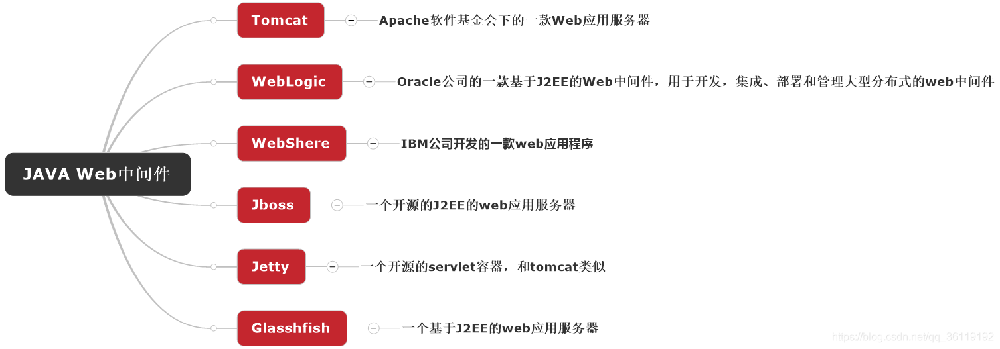
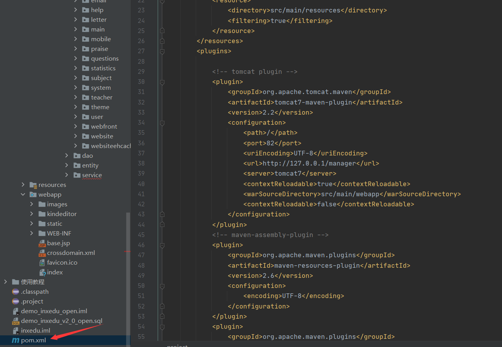

title: java代码审计之常见漏洞学习
abbrlink: 15301
date: 2021-01-27 14:28:28
tags:
java代码审计之常见漏洞学习
前言
Java代码审计中常见的一些漏洞学习总结以及一些审计思路。
java项目分层
- 视图层(View 视图)
- 控制层（Controller、Action控制层)
- 服务层(Service)
- 业务逻辑层BO(business object)
- 实体层(entity 实体对象、VO(value)object)值对象、模型层(bean)
Servlet
- Servlet是在Java Web容器上运行的小程序
- Servlet3.0之前的版本都需要在web.xml中配置
- Spring MVC框架就是基于Servlet技术实现的
sql注入漏洞
成因
本质是将用户的输入当做代码执行，程序将用户的输入拼接到了sql语句中，改变原来sql语句的语义造成攻击。
常见的一些例子
DAO: 存在拼接的SQL语句
1 | String sql="select * from user where id="+id |
Hibernate框架
1 | session.createQuery("from Book where title like '%" + userInput + "%' and pu |
Mybatis框架
1 | Select * from news where title like ‘%${title}%’ |
审计方法
对于sql注入来讲，只要是与数据库存在交互的地方，应用程序对用户的输入没有进行有效的过滤，都有可能存在SQL注入漏洞。
在实际环境中，中间件漏洞的sql注入漏洞可能更多：
- Mybatis框架中的like、in和order by语句。
- Hibernate框架中的createQuery()函数
快速定位相关sql语句上下文，查看是否有显式过滤机制。
修复
参数化查询，使用java.sql.PreparedStatement来对数据库发起参数化查询。
1
2
3
4stmt=conncetion.prepareStatement(sqlString);
stmt.setString(1,userName);
stmt.setString(2,itemName);
rs=stmt.executeQuery();使用预编译能够预防绝大多数SQL注入，java.sql.PreparedStatement代替java.sql.Statement,但对于order by后的不能用预编译进行处理，只能手动过滤。
1
2
3
4
5
6
7......
String sqlString = "select * from db_user where username=? and password=?";
PreparedStatement stmt = connection.prepareStatement(sqlString);
stmt.setString(1, username);
stmt.setString(2, pwd);
ResultSet rs = stmt.executeQuery();
......Mybatis的SQL配置中，采用
#变量名称
XSS漏洞
成因
网站与后端交互的输入输出没有做好过滤，导致攻击者可以插入恶意js语句进行攻击。根据后端代码不同 ，大致可以分为反射型、存储型、DOM型
举例:
1 | ("/xss") |
这里接收了用户输入的参数name，然后又直接输出到了页面，整个过程没有任何过滤，
存储型
根据已知的用户ID查询该用户的数据并显示在JSP页面上。如果存入的数据存在未经过滤的恶意js代码。就会造成xss攻击。
1 | <% ... |
审计方法
全局搜索用户的输入与输出，查找是否存在过滤。
修复
- 配置全局过滤器web.xml
1 | <filter> |
使用commons.lang包，主要提供了字符串查找、替换、分割、去空白、去掉非法字符等等操作。有几个函数可以用来过滤。
- StringEscapeUtils.escapeHtml(string)，使用HTML实体，转义字符串中的字符。
- StringEscapeUtils.escapeJavaScript(string)，使用JavaScript字符串规则转义字符串中的字符。
XXE漏洞
成因
XXE就是XML外部实体注入。当允许引用外部实体时，通过构造恶意内容，就可能导致任意文件读取、系统命令执行、内网端口探测、攻击内网网站等危害。
审计方法
XML解析一般在导入配置、数据传输接口等场景会用到，xml解析器是否禁用外部实体。
全局搜索如下函数:
1 | javax.xml.parsers.DocumentBuilder |
修复
- 使用白名单检验，例如上面的代码增加正则匹配
1 | if (!Pattern.matches("[_a-bA-B0-9]+", user.getUserId())) |
- 使用安全的XML库，使用dom4j来构建XML,dom4j会对文本数据域进行xml编码。
SSRF漏洞
成因
代码中提供了从其他服务器应用获取数据的功能但没有对目标地址做过滤与限制。
java的SSRF利用方式比较局限:
- 利用file协议任意文件读取。
- 利用http协议端口探测
支持的一些协议:
1 | file ftp mailto http https jar netdoc |
举例:
1 | String url = request.getParameter("url"); |
漏洞代码四种情况
- Request
1 | Request.Get(url).execute() |
- openStream
1 | URL u; |
- HttpClient
1 | String url = "http://127.0.0.1"; |
- URLConnection和HttpURLConnection
1 | URLConnection urlConnection = url.openConnection(); |
审计方法
只要是能够对外发起网络请求的地方，就有可能会出现SSRF漏洞。重点查找以下函数。
1 | HttpClient.execute |
new URL()：构造一个url对象openConnection():创建一个实例URLConncetion.getInputStream()：获取URL的字节流
修复
- 取URL的Host
- 取Host的IP
- 判断是否是内网IP，是内网IP直接return，不再往下执行
- 请求URL
- 如果有跳转，取出跳转URL，执行第1步
- 当判断完成最后会去请求URL
任意文件操作类漏洞
成因
常见的一些java文件操作类的漏洞:任意文件的读取、下载、删除、修改，这类漏洞的成因基本相同，都是因为程序没有对文件和目录的权限进行严格控制，或者说程序没有验证请求的资源文件是否合法导致的。
举例:
任意文件读取
1 | @GET |
1 | def getWordList(value:String) = Action { |
任意文件写入
1 | file file = new File(getExternalFilesDir(TARGET_TYPE), filename); |
审计方法
全局搜索关键字或者方法
- FileInputStream
- getPath
- getAbsolutePath
排查程序的安全策略配置文件，查找permission Java.io.FilePermission，查看IO方案是否只对程序的绝对路径赋予读写权限。
修复方法
- 配置全局安全策略
- 使用File.getCanonicalPath()方法，该方法会对所有别名、快捷方式以及符号链接进行一致 地解析。特殊的文件名，例如“..”会被移除。
命令执行漏洞
成因
服务端没有针对执行命令的函数进行过滤，导致攻击者可以提交恶意构造语句。java中常见如：Runtime.exec() Process ProcessBuilder.start
举例
Java中的命令执行离不开调用反射的机制，在实际的场景往往离不开反序列化的利用。
1 | import java.io.*; |
上面的代码利用Runtime.exec()方法调用dir命令。
攻击者可以利用&符号执行多条命令，例如
1 | java -Ddir="..\\ & whoami |
审计方法
RCE出现的原因和场景很多，以后慢慢学习~
1 | 服务端直接存在可执行函数（exec()等），且对传入的参数过滤不严格导致 RCE 漏洞 |
审计的时候可以重点寻找：
Runtime.exec()
Process
ProcessBuilder.start()
修复
- 正则表达式匹配用户输入
1 | if (!Pattern.matches("[0-9A-Za-z@.]+", dir)) { |
反序列化漏洞
成因
当输入的反序列化的数据可被用户控制，那么攻击者即可通过构造恶意输入，让反序列化产生非预期的对象，在此过程中执行构造的任意代码。
审计方法
反序列化操作常常出现在导入模版文件、网络通信、数据传输、日志格式化存储或者数据库存储等业务功能处,在代码审计时可重点关注一些反序列化操作函数并判断输入是否可控。
- ObjectInputStream.readObject
- ObjectInputStream.readUnshared
- XMLDecoder.readObject
- XStream.fromXML
- 第三方jar包:ObjectMapper.readValue,jackson中的JSON.parseObject,fastjson中的api
修复
- 升级服务端所依赖的可能被利用的jar包，包括JDK。
- 在执行反序列前对InputStream对象进行检查过滤
中间件漏洞
成因
中间件是提供系统软件和应用软件之间连接的软件，它将应用程序运行环境与操作系统隔离，从而实现应用程序开发者不必为更多系统问题忧虑，而直接关注该应用程序在解决问题上的能力 。容器就是中间件的一种。
java常见的中间件:

审计方法
直接打开pom.xml文件查看其 使用的中间件及其版本，然后到漏洞库里找漏洞即可。
修复
及时更新项目使用的java中间件的版本。
业务逻辑漏洞
成因
常见的业务逻辑漏洞主要是越权，分为平行越权和垂直越权。在javaweb的各个功能点中都可能存在越权漏洞。
主要原因还是因为程序没有对当前用户的权限进行严格控制，或者是后台没有判断当前用户id。
审计方法
在每个request.getParameter("userid");之后查看是否有检验当前用户与要进行增删改查的用户。
修复
获取当前登陆用户并校验该用户是否具有当前操作权限，并校验请求操作数据是否属于当前登陆用户，当前登陆用户标识不能从用户可控的请求参数中获取。
其他漏洞
java中存在的安全问题还有很多，比如ldap注入、jndi注入、rmi反序列化等等会在后面的文章单独拿出来说，更多的java安全漏洞可以参考先知的java安全手书：
1 | https://xz.aliyun.com/t/3372 |
最后推荐一个自动化搜索java敏感函数的脚本:Cryin/JavaID: java source code static code analysis and danger function identify prog (github.com)
参考文章
java代码审计中的一些常见漏洞及其特征函数 - 京亟QAQ - 博客园 (cnblogs.com)
https://www.bookstack.cn/read/anbai-inc-javaweb-sec/
JAVA代码审计的一些Tips(附脚本) - 先知社区 (aliyun.com)
JAVA安全之JAVA服务器安全漫谈 | WooYun知识库 (xmd5.com)